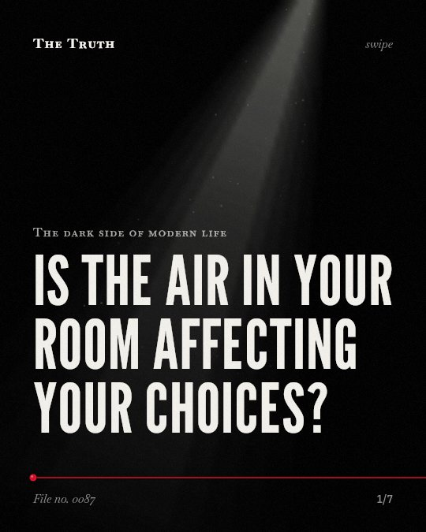

The dark side of modern life
Is the air in your room affecting your choices?

The impact of CO2 on your brain is inconsistent.
While some studies show that higher carbon dioxide levels reduce decision-making performance, others show performance can remain similar or even exceed baseline at higher concentrations.
Supported. At least one solid peer-reviewed study. The evidence is mixed.
What the research found
Performance on most SMS measures and aggregate speed, accuracy, and efficiency scores across Cognition tests were lower at 1200 ppm than at baseline (600 ppm); however, at higher CO2 concentrations performance was similar to or exceeded baseline for most measures.
“Performance on most SMS measures and aggregate speed, accuracy, and efficiency scores across Cognition tests were lower at 1200 ppm than at baseline (600 ppm); however, at higher CO2 concentrations performance was similar to or exceeded baseline for most measures.”
Experiment, 2019. Scully et al., npj Microgravity.
At 2,500 ppm, large and statistically significant reductions occurred in seven scales of decision-making performance (raw score ratios, 0.06-0.56), but performance on the focused activity scale increased.
“At 2,500 ppm, large and statistically significant reductions occurred in seven scales of decision-making performance (raw score ratios, 0.06-0.56), but performance on the focused activity scale increased.”
Study, 2012. Satish et al., Environmental Health Perspectives.
At 1,000 ppm CO2, moderate and statistically significant decrements occurred in six of nine scales of decision-making performance.
“Relative to 600 ppm, at 1,000 ppm CO2, moderate and statistically significant decrements occurred in six of nine scales of decision-making performance.”
Study, 2012. Satish et al., Environmental Health Perspectives.
Cognitive function scores were significantly better under Green+ building conditions than in the Conventional building conditions for all nine functional domains.
“Cognitive function scores were significantly better under Green+ building conditions than in the Conventional building conditions for all nine functional domains.”
Study, 2015. Allen et al., Environmental Health Perspectives.
Current findings of the cognitive impact of CO2 are inconsistent.
“Poor indoor air quality indicated by elevated indoor CO2 concentrations has been linked with impaired cognitive function, yet current findings of the cognitive impact of CO2 are inconsistent.”
Experiment, 2020. Du et al., Indoor Air.
The data is complex.
Research shows that at 1,000 ppm and 2,500 ppm, some scales of decision-making performance decrease significantly. However, other measures, like focused activity, may increase. Current findings are inconsistent.
Your environment shapes your choices.
That may be why your mental clarity fluctuates throughout the day. Variations in your room's air quality and building design could be influencing your ability to make clear decisions.
This part is our reading of the evidence, not a finding.
The afternoon slump.
You sit in a closed office or a small bedroom. The air feels heavy. You find it harder to choose what to do next or how to solve a problem.
The honest summary
The evidence shows that while elevated CO2 is linked to and can cause decrements in decision-making, the effects are inconsistent and may vary depending on the specific concentration and subject population.
Findings are complicated by confounding factors such as variations in cognitive assessment methods, study designs, and individual differences in subjects.
Is the air in your room helping or hindering your choices?
Sources
- Joseph G. Allen, Piers MacNaughton, Usha Satish et al. (2015). Associations of Cognitive Function Scores with Carbon Dioxide, Ventilation, and Volatile Organic Compound Exposures in Office Workers: A Controlled Exposure Study of Green and Conventional Office Environments. Environmental Health Perspectives. Study, cited 961 times.
- Usha Satish, Mark J. Mendell, Krishnamurthy Shekhar et al. (2012). Is CO2 an Indoor Pollutant? Direct Effects of Low-to-Moderate CO2 Concentrations on Human Decision-Making Performance. Environmental Health Perspectives. Study, cited 1,053 times.
- Bowen Du, Marlie C. Tandoc, Michael Louis Mack et al. (2020). Indoor CO 2 concentrations and cognitive function: A critical review. Indoor Air. Experiment, cited 190 times.
- Robert R. Scully, Mathias Basner, Jad Nasrini et al. (2019). Effects of acute exposures to carbon dioxide on decision making and cognition in astronaut-like subjects. npj Microgravity. Experiment, cited 83 times.
Also read for this file, not quoted
This file was researched and drafted by software, then checked by rules a model cannot talk its way around: each quote above was matched word for word against the paper, and every number had to appear in it. How files are made.